FOUNDATIONS OF LEGEND
Throughout history, exceptional witches and wizards have pushed the boundaries of magic. From Merlin and the four founders of Hogwarts to creators of legendary relics like Nicolas Flamel, their inventions and discoveries form the bedrock of wizarding culture and history.
CHARACTERS OF THE GROUP

MERLIN
The "Prince of Enchanters." Championed Muggle rights and created the Order of Merlin.
GODRIC GRYFFINDOR
Godric Gryffindor was one of the four founders of Hogwarts. He valued bravery, courage, and chivalry. Gryffindor owned the Sorting Hat. His sword later became a Horcrux-destroying weapon.
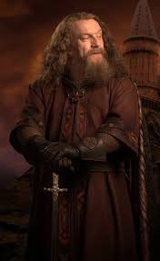
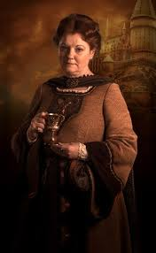
HELGA HUFFLEPUFF
Helga Hufflepuff was known for her kindness and fairness. She accepted students others rejected. Helga valued loyalty and hard work. She introduced house-elves to Hogwarts kitchens.
ROWENA RAVENCLAW
Rowena Ravenclaw prized intelligence and creativity. She created the Ravenclaw diadem. Rowena had a troubled relationship with her daughter. Her diadem later became a Horcrux.
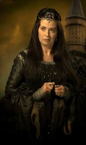
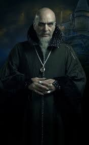
SALAZAR SLYTHERIN
Salazar Slytherin believed only pure-bloods should attend Hogwarts. He built the Chamber of Secrets. Salazar left a Basilisk hidden within the school. His views caused the founders to split.
MORGAN LE FAY
Morgan le Fay was a powerful and dangerous witch. She was known for dark magic and ambition. Morgan opposed Merlin’s ideals. She became a legendary dark figure.

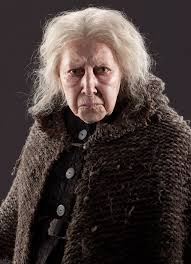
BATHILDA BAGSHOT
Famous historian and author. Great-aunt of Grindelwald. Murdered and used as a suit for Nagini.
NICOLAS FLAMEL
Celebrated Alchemist and maker of the Philosopher's Stone. Lived to be over 665 years old.
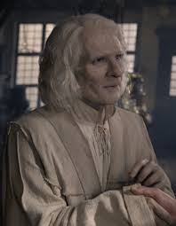
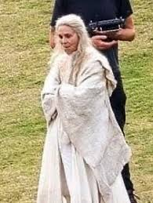
PERENELLE FLAMEL
Perenelle Flamel was Nicolas Flamel’s wife. She shared his long life through alchemy. Perenelle protected the Philosopher’s Stone. She died peacefully after its destruction.
GELLERT GRINDELWALD
Dark Wizard who terrorized Europe. Once Dumbledore's friend. Defeated in 1945.
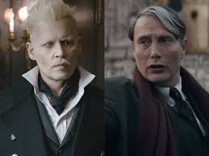
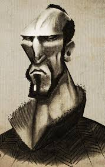
ANTIOCH PEVERELL
Antioch Peverell was the eldest of the Peverell brothers. He created the Elder Wand. Antioch sought unbeatable power. He was murdered for his wand.
CADMUS PEVERELL
Cadmus Peverell was the second Peverell brother. He created the Resurrection Stone. Cadmus tried to bring back the dead. His grief led to his downfall.
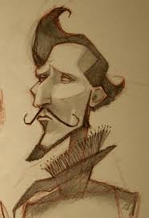
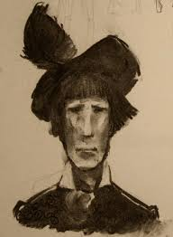
IGNOTUS PEVERELL
Ignotus Peverell was the youngest brother. He created the Invisibility Cloak. Ignotus avoided death wisely. His cloak passed through generations.
BOWMAN WRIGHT
Bowman Wright invented the Golden Snitch. He was a skilled metal charmer. Wright revolutionized Quidditch. His invention is still used today.
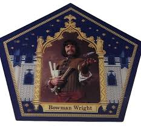
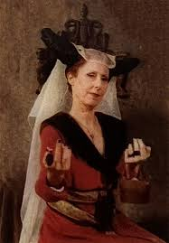
IGNATIA WILDSMITH
Ignatia Wildsmith invented Floo Powder. She transformed magical travel. Her invention connected wizarding homes. Floo travel remains widely used.